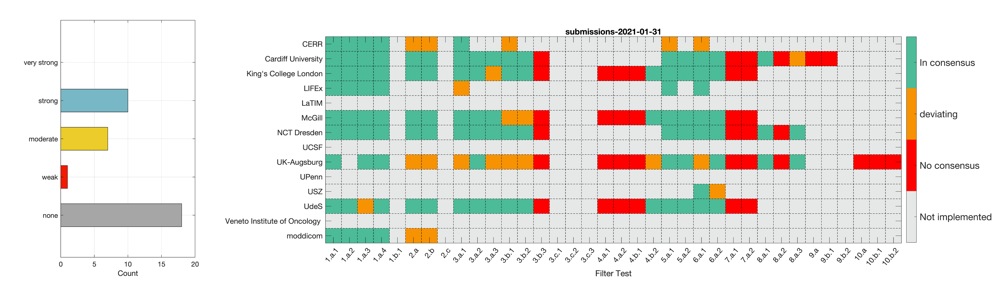

IBSI Chapter 2 − Image Filtering
The Image Biomarker Standardisation Initiative (IBSI) aims to improve reproducibility of radiomics studies by standardising the computational process of extracting image biomarkers (features) from images. We have previously established reference values for 169 commonly used features, created a standard radiomics image processing scheme, and developed reporting guidelines for radiomic studies (1).
One element that we did not previously address are convolutional image filters, such as wavelet or Laplacian of Gaussian filters, which can play an important part in highlighting specific characteristics such as edges and blobs in medical images. Features derived from filter response maps have been found to be poorly reproducible (2). The aim of this project is to standardise the way we use and implement image filters for radiomics studies, and thereby improve reproducibility.

Project overview
This project will function similarly to the IBSI 1 project, and will be divided into 3 distinct phases:
- Phase 1: Technical validation of image filters without additional image processing. In the first phase, we will use a set of digital phantoms to establish a standard implementation of various image filters. This phase does not involve computation of image features or any image processing other than image filtering. A filter is applied to a digital phantom and the filtered image can be uploaded to a website for direct comparison. Therefore, only the filters’ response maps are compared in this first phase.
- Phase 2: Establishing reference values for features obtained from filter response maps. In the second phase, we will use a CT image of a lung cancer patient to establish reference values for intensity-based statistics (e.g. average, maximum) and intensity histogram features computed from the filter response maps. This also involves other image processing steps, i.e. interpolation and intensity discretisation. The extracted features will be compared in the manner established during IBSI 1. The objective is to achieve a strong consensus (≥ 6 teams find the same value, representing >50% of teams) on reference values for at least 90% of features computed from image filters.
- Phase 3: Validating reproducibility of features obtained from filter response maps. In the third phase, we will validate reproducibility of features obtained from standardised filter implementations using a multi-modality imaging dataset of 51 patients with soft-tissue sarcoma.
A small IBSI team has already prepared and reviewed a reference manual, which will form the basis of this project, but it is expected to be further developed during the course of the project (reference to arXiv document to come).
The study resulting from this project will be published in a peer-reviewed academic journal, preferably under an open access scheme. The paper will be under a group authorship, with all individual authors being listed alphabetically within the paper (see Recommendations | Defining the Role of Authors and Contributors).
Participation
To participate, you need to fulfill the following three requirements:
- You must develop your own radiomics software.
- Your radiomics software must be (made) compliant with the IBSI 1 standards (for phases I & II).
- You must participate in at least one of the phases in the IBSI 2 project.
Researchers fullfilling these requirements can then now participate to the IBSI 2 project by following these instructions:
- Read the documentation related to IBSI 2 in the Documentation tab of this website.
- Follow the instructions in the IBSI 2 reference manual to perform the tests of Phase 1 and Phase 2 on the datasets available in the Datasets tab of this website. A summary of instructions are presented here:
- Please check that your software can reproduce the reference values for IBSI 1. To do so, you may download the datasets from HERE. The features computed are then computed using the settings reported in the reference manual for IBSI 1 and can be checked using the compliance spreadsheet. Both are found as supplement to the IBSI 1 paper.
- Download the chest CT dataset from HERE.
- Compute features according to the filter and image processing settings in section 5.2 in the current arXiv version.
- Fill out the submission csv file.
- Upload your results to our team by following the instructions found in the Uploads tab of this website.
Project duration from start to manuscript acceptance is expected to be at least 1.5-2 years.
References
- Zwanenburg A, Vallières M, Abdalah MA, Aerts HJWL, Andrearczyk V, Apte A, et al. The Image Biomarker Standardization Initiative: Standardized Quantitative Radiomics for High-Throughput Image-based Phenotyping. Radiology. 2020 Mar 10;191145.
- Bogowicz M, Leijenaar RTH, Tanadini-Lang S, Riesterer O, Pruschy M, Studer G, et al. Post-radiochemotherapy PET radiomics in head and neck cancer - The influence of radiomics implementation on the reproducibility of local control tumor models. Radiother Oncol. 2017 Dec;125(3):385–91.